Today: a note in italics, a week strip, rep ranges on every row, a cloud with a red dot. Proposed: one sentence says what changed; only today's loads; arrows on the changes.
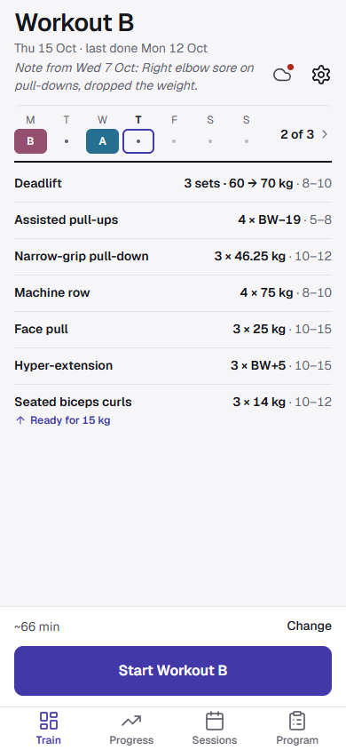
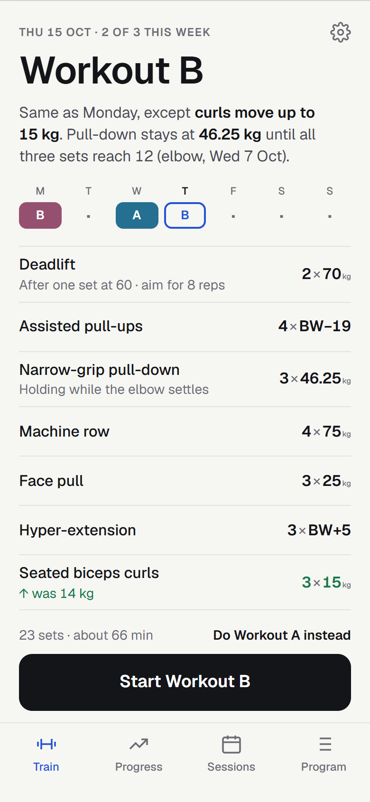
Today: 280 px of empty band between the set tiles and the numbers; plates as "Per side: 20" in small grey. Proposed: one centred instrument, plates drawn, last time under the reps.
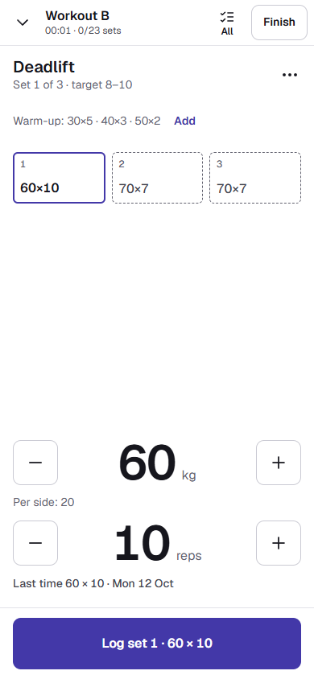
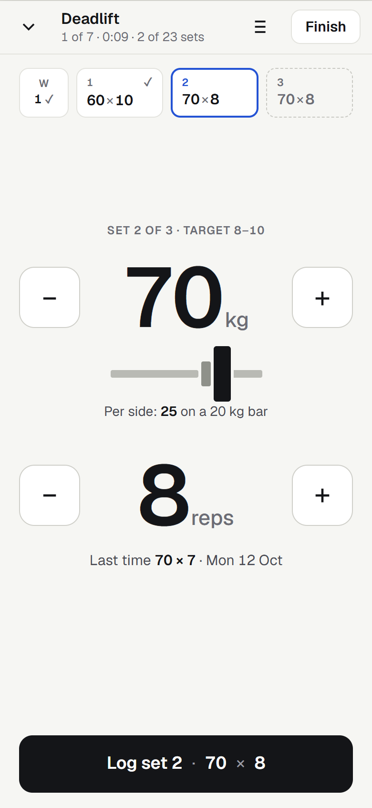
Today: five regions; the countdown is bottom-left and the only filled button logs the next set. A rep best wears the PR tag. Proposed: the countdown is the hero; a rep best is one quiet line.
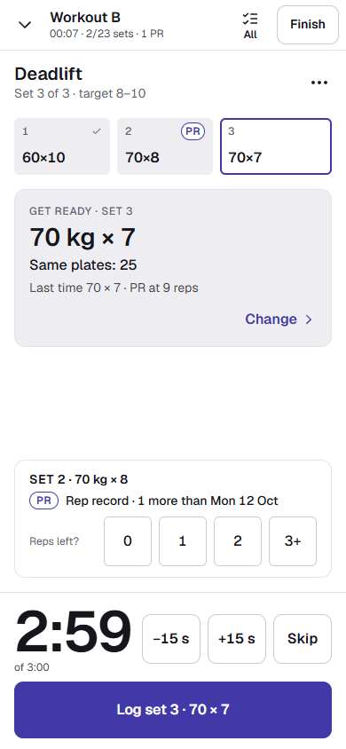
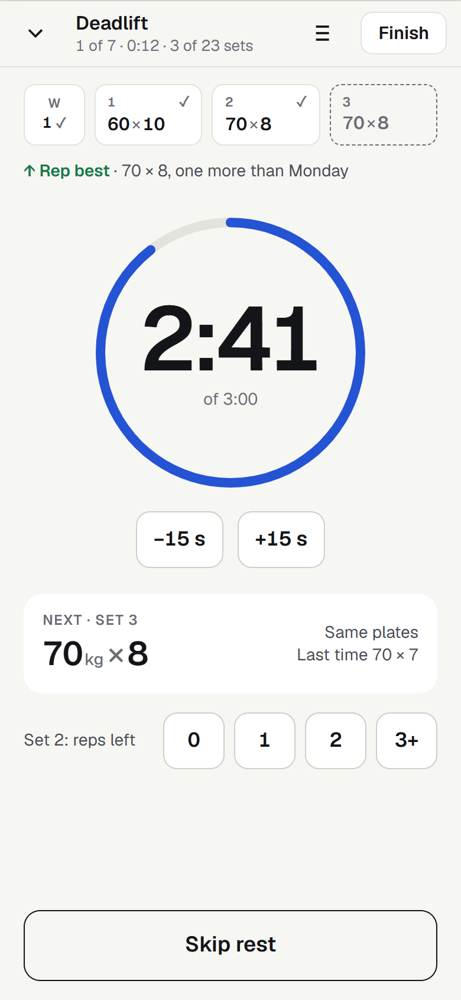
Today: a run-on stats line, then each lift as a sentence of numbers. Proposed: one verdict sentence, records, then a glyph and one number per lift.
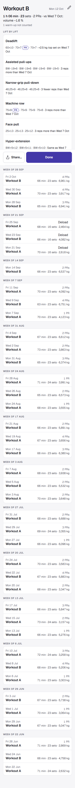
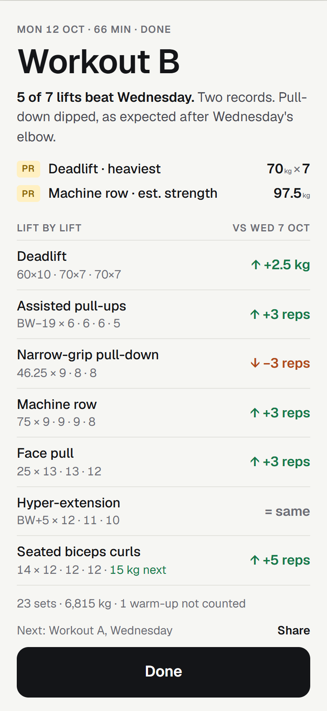
Today: four decision cards fill the first screen; no lift numbers until you scroll. Proposed: the verdict as a headline, weeks as consistency, every lift as one row.
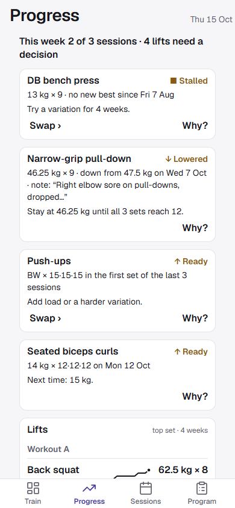
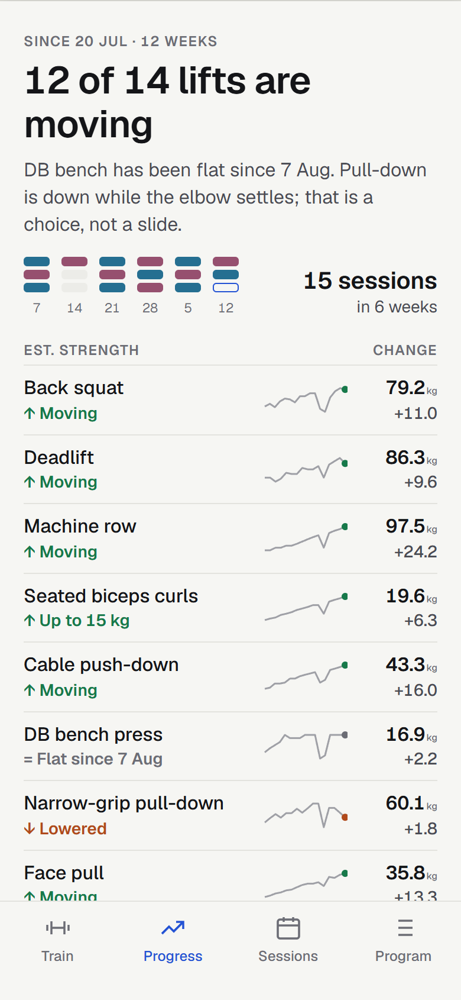
Today: a verdict card, two stacked segmented controls, rep labels on every point. Proposed: status and advice as sentences, one number with its meaning, one chart with one chip row.
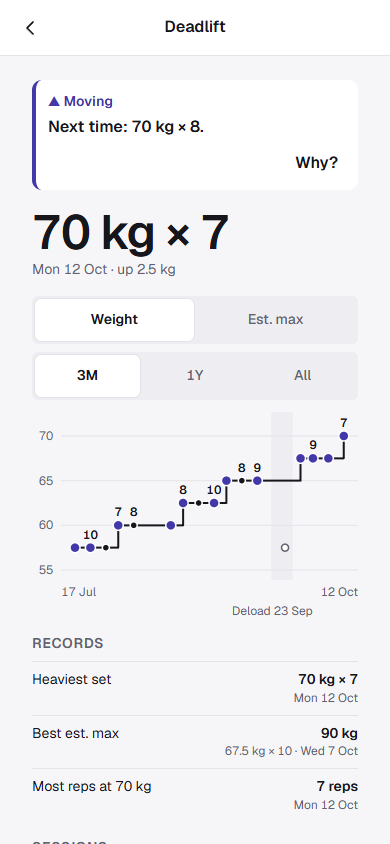
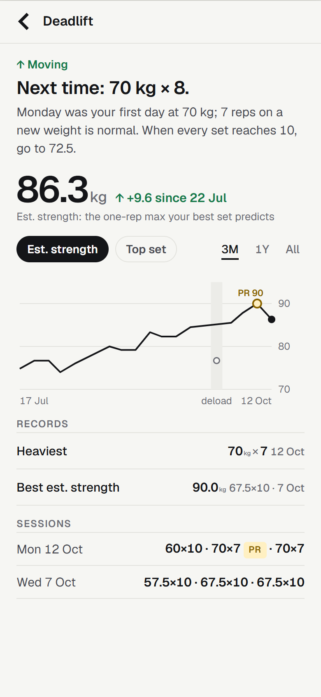